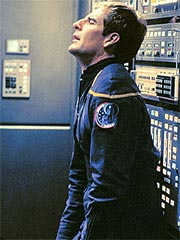
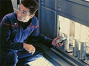
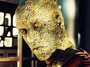
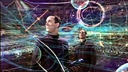
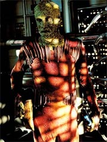
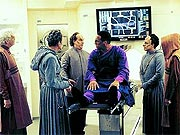
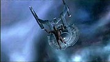

Episdio
anterior | Prximo
episdio
Sinopse:
A Enterprise muda de curso para
estudar um berrio estelar, quando detecta uma nave nas
proximidades. Ao entrar em contato, Archer pergunta o que os aliengenas
fazem por ali e informado pelo capito da nave, Fraddock, de
que um grupo de peregrinos est a bordo para observar um singular
fenmeno astronmico que ocorre a cada onze anos naquela regio
--a exploso de nutrons na superfcie de uma jovem
protoestrela.

A ocasio,
conhecida por esses aliengenas como a "Grande Pluma de Agosoria",
tem uma conotao religiosa para eles, que representa os ciclos
de constante criao pelos quais passa o Universo. Diante do
singular grupo, Archer oferece a hospitalidade da Enterprise ao
capito Fraddock, convidando-os para um tour pela nave.
Sem o conhecimento da tripulao da Enterprise, um dos membros
do grupo que vem a bordo Silik, o Suliban que Archer enfrentou
meses atrs. Ele foi enviado para uma misso a bordo da
Enterprise por um misterioso ser do futuro, que troca com os
Sulibans tecnologia gentica por obedincia.
Enquanto os visitantes esto a bordo, a Enterprise comea a
passar por uma srie de eventos turbulentos no interior da nuvem.
As descargas que disparam na direo da nave acabam provocando
um curto nos sistemas da engenharia, que eventualmente levariam a
uma cascata que atingiria o reator de dobra e explodiria toda a
nave. Isso s no aconteceu porque Silik desconectou um dos
cabos de conexo da engenharia, sem que ningum percebesse.
Os peregrinos voltam nave aliengena, levando junto o dr.
Phlox, que far um estudo mais detalhado de sua cultura a pedido
do capito Archer. Enquanto isso, Tucker determina o que evitou
que a Enterprise fosse pelos ares, mas constata que nenhum de seus
oficiais desconectou o cabo. A desconfiana recai sobre algum dos
peregrinos, uma vez que alguns deles demonstraram grande
conhecimento da tecnologia de dobra.

Archer
contata o capito Fraddock, mas o aliengena diz que seus
passageiros todos negam participao no evento. O capito da
Enterprise d prosseguimento a seu trabalho, quando abordado
por Daniels, um de seus oficiais. Ele diz que precisa urgentemente
conversar com o capito, mas Archer diz que no tem tempo. S
quando revela conhecer o que aconteceu entre o capito e Silik na
Hlice que Archer decide dar ouvidos a seu subordinado.
A pedido de Daniels, os dois vo at os aposentos do tenente,
que s ento revela que no um oficial da Frota Estelar, mas
sim um espio infiltrado na tripulao de Archer. Ele diz ter
vindo do sculo 31 para proteger a linha do tempo das intervenes
dos Sulibans, na chamada Guerra Fria Temporal. Depois de
demonstrar tecnologia altamente avanada, ao acionar um aparelho
que imediatamente transformou as imediaes do quarto em uma espcie
de observatrio temporal, Daniels revela que foi Silik quem
evitou a destruio da Enterprise e pede ajuda do capito para
captur-lo.
Archer diz que precisa conferenciar com seus oficiais superiores
antes de tomar uma deciso. Ele se rene com Tucker e T'Pol e
revela tudo o que Daniels lhe disse. A Vulcana ctica,
descredenciando a possibilidade de viagem no tempo com base em
estudos cientficos feitos por cientistas Vulcanos. Tucker parece
acreditar mais na histria, mas se incomoda com ajudar Daniels a
capturar o responsvel pela salvao da Enterprise.

Quando o capito
informado de que os peregrinos e Phlox esto de volta nave,
para observar o pico de atividade da Grande Pluma, ele decide que
no h mais tempo para debate. Ele ordena que Tucker e T'Pol
auxiliem Daniels a conectar seu equipamento aos sensores da nave,
para detectar a presena de Silik.
A dupla e Daniels comeam a trabalhar na engenharia, enquanto
Archer vai at o refeitrio para observar os visitantes, na
tentativa de encontrar Silik. A cerimnia de observao ocorre
como o previsto, com Phlox conduzindo as preces, e Archer se
recolhe a seus aposentos. L, ele surpreendido por Silik.
O Suliban diz ao capito que Daniels mente, e que ele que na
verdade tem inteno de mudar a linha do tempo --Silik teria
sido enviado para impedir que Daniels conseguisse fazer isso,
destruindo a Enterprise. O Suliban entretanto no sabe quem est
atrs dele, e pede a cooperao de Archer. O capito em princpio
no concorda, mas logo contatado por T'Pol que comunica que as
modificaes esto concludas e que Daniels est ansioso para
comear o rastreamento. Ao descobrir quem est atrs dele e
onde, Silik tonteia Archer e vai at a engenharia.
L, Daniels detecta sua presena e pede a Tucker que providencie
a evacuao do local. A engenharia esvaziada, mas Silik
consegue surpreender Daniels e mat-lo. Tucker e T'Pol,
observando do lado de fora da engenharia, tentam comunicar Archer
do que est acontecendo. Ao no ouvir resposta do capito,
convocam Phlox aos aposentos do capito e se encontram l.
Phlox acorda Archer, que fica sabendo do que aconteceu e decide ir
atrs de Silik. O capito passa nos aposentos de Daniels,
somente para descobrir que o Suliban roubou o equipamento que cria
o observatrio temporal. Com a tecnologia recm-instalada na
Enterprise, a tripulao consegue determinar em que local da
nave est Silik, e Archer passa a segui-lo.

Os dois
tm um confronto na baa dos shuttlepods, onde Archer consegue
danificar o equipamento roubado por Silik. O Suliban ento decide
partir. Ele despressuriza a baa, quase atirando Archer ao espao,
e ento mergulha rumo a sua nave, que parte em seguida, em
velocidade de dobra. Archer quase morre pelo vcuo da baa
despressurizada, mas consegue restabelecer o ar no compartimento
antes de sufocar.
A ponte comunica que Silik est fugindo e pergunta se a
Enterprise deve segui-lo, ao que Archer ordena que a nave mantenha
posio. Finalmente, antes de escrever um complicado relatrio
para a Frota Estelar, o capito instrui Reed a selar os antigos
aposentos de Daniels, pois no se sabe que outros segredos aquela
sala ainda pode guardar.
Comentrios:
Na primeira vez em que ouvi alguns fs mencionarem o
grande arco da Guerra Fria Temporal que permeia o conceito de Enterprise
como sendo a "mitologia da srie", achei que eles
estavam apenas "colando" de "Arquivo-X". L
que se ouvia o tempo todo essa histria de mitologia para l,
mitologia para c...
Pois bem, "Cold Front" provou que esses fs
tinham razo. Tal e qual est se desenhando, o arco da Guerra
Fria Temporal muito mais parecido com uma trama sada de
"Arquivo-X" do que de qualquer outro arco produzido em Jornada
nas Estrelas.
Isso porque as bases desse conceito so o suspense e o mistrio,
e no simplesmente o de uma histria pica e de longa e
continuada durao, como foram os arcos de Deep Space Nine,
ou mesmo os "quase-arcos" de A Nova Gerao.
E o papel de "Cold Front" nessa mitologia
justamente o de adicionar ingredientes de suspense e mistrio, em
vez de movimentar personagens e eventos. Praticamente nada de novo
se aprende sobre a tal da Guerra Fria Temporal ou de seus agentes.
Muito ao contrrio, os Sulibans, que at ento eram os viles
assumidos da srie, ganharam neste episdio uma conotao
muito mais misteriosa. Afinal, Silik o responsvel pelo fato
de a Enterprise estar inteira para o episdio seguinte!
Isso colocou esses supostos viles em seu devido lugar. No como
uma raa malvola por definio, mas apenas como a fora-tarefa
de uma organizao de outra poca cujas intenes ainda so
desconhecidas.
No episdio, finalmente temos a chance de ver, ao menos de
relance, com quem os Sulibans esto travando essa guerra
temporal. Daniels parece ser um dos "good guys", mas
aposto que ningum, nem Archer, colocaria a mo no fogo por ele.
Isso ajuda ainda mais a colocar lenha nessa interessante linha de
histria que est sendo desenvolvida ao longo da srie.
Alm de trazer a saga iniciada em "Broken
Bow" de volta ordem do dia, o episdio aproveita
para tocar, de forma cruzada, em um outro elemento relativamente
pouco abordado em Jornada nas Estrelas: religio. Aqui ela
no discutida proeminentemente, j que seu papel bastante
irrelevante. Entretanto, ningum pode deixar de registrar quando
religies terrestres so mencionadas. Os roteiristas foram
especialmente espertos ao ligar com a religiosidade do nosso capito.
Quando perguntado sobre o assunto, Archer preferiu desconversar:
"Procuro manter a mente aberta", respondeu.

Mais uma vez so
grandes agentes da histria apenas Archer, T'Pol e Tucker, alm
dos convidados Daniels e Silik. Mas parece que nesse episdio os
roteiristas conseguiram um incrvel equilbrio da participao
dos outros regulares da srie, envolvendo-os em boas interaes
uns com os outros, mas sem necessariamente tomar parte na histria
principal.
um modo mais sutil de explorar todos os personagens da srie
do que o usado, por exemplo, em Deep Space Nine, onde duas
histrias paralelas iriam andar juntas ao longo de um episdio
para colocar todos os personagens para fazer alguma coisa.
Entretanto, nem por isso menos efetivo.
Os dilogos entre Hoshi, Mayweather e Reed na ponte so agradveis
de se acompanhar, e conseguem dizer bastante sobre os personagens
em pouco tempo. O tom intelectual de Hoshi surge quando ela
demonstra preferir um bom livro a um filme; Mayweather mostra sua
empolgao de estar na Enterprise, ao decidir, aps uma marota
sugesto de Hoshi, sentar na cadeira do capito depois que Reed
o deixa no comando; e o oficial de armamentos mostra todo o seu
sarcasmo ao pedir a um embaraado Mayweather, ainda na cadeira do
capito, autorizao para retomar seu posto na ponte.
incrvel como duas linhas de roteiro bem escritas valem mais
que mil com teor desinteressante. Essa cena com Mayweather fez
muito mais pelo personagem (apesar da reminiscncia inevitvel
com o pobre Harry Kim, de Voyager) do que um episdio
inteiro devotado a ele, no caso, "Fortunate
Son". A sequncia toda tambm ajuda a nos mostrar o
modo de vida dos humanos do sculo 22, que claramente ainda
conseguem obter bom entretenimento de filmes "B" de fico
cientfica.
Reed claramente um adepto desse gnero. O dilogo dele com
Mayweather na ponte, mais uma vez em tom sarcstico, d a
entender que ele tem algo a ver com a escolha do filme exibido a
bordo da nave na noite anterior. E isso s vem a confirmar a
frase do capito Archer em "Fight or
Flight": "Voc anda vendo muitos filmes de fico
cientfica". Mais um ponto para a caracterizao do
personagem.
Phlox tambm teve sua chance de brilhar ao realizar um intercmbio
com os aliengenas, visitando sua nave e descobrindo mais sobre
sua cultura. A cena em que ele entoa a prece para a Grande Pluma
bem executada e Billingsley, como de costume, manda uma
convincente atuao para seu personagem.
Outra caracterstica interessante que brota do mdico da
Enterprise a do observador e bisbilhoteiro. Em onze episdios,
Phlox j especulou sobre a atividade sexual de tripulantes ("Fight
or Flight"), a gravidez de Tucker ("Unexpected"),
a vida pessoal de T'Pol ("Breaking
the Ice") e, agora, ele j pega no ar a inquietao
de Archer e, sem rodeios, tenta inquiri-lo sobre o que estaria
incomodando o capito. Sem dvida, ningum pode reclamar de
comportamento esquizofrnico ou incoerente do mdico de bordo.

T'Pol
est bastante apagada aqui, apenas cumprindo a funo de ser a
"ctica de bordo". Tucker conquista a audincia com
seus maneirismos, mas no d grande contribuio. Archer acaba
recebendo o melhor tratamento do trio, mas mesmo assim no diz
muito sobre seu personagem.
Ainda assim, sobra um osso para ele. A cena em que Archer no diz
nada e apenas se senta em sua cadeira no centro da ponte, no fim
do episdio, diz muito mais sobre sua inquietao e confuso
do que os 40 minutos anteriores do episdio. Vai a um crdito
a Scott Bakula pela excelente interpretao, em uma cena que no
exigia muito mais que o seu silncio.
Silik se mostra um recorrente mais interessante do que em "Broken
Bow", confirmando a perspectiva de que ele poderia
ser mais desenvolvido do que vimos no piloto da srie. E a interao
dele com Archer , no mnimo, interessante. O fato de ele sempre
chamar o capito de John d um tom terrivelmente opressor s
cenas, tornando-o um vilo bastante atraente. Silik sempre se
pronuncia com um tom de que "eu sei mais do que voc imagina
sobre tudo isso, John", o que s traz brilho ao confronto
dos dois.
E por falar em confronto, os dois mais uma vez se enfrentam no
estilo Srie Clssica, com muitos socos e pontaps, o
que ajuda a estabelecer o novo padro de Enterprise,
comparando a srie com suas predecessoras imediatas. Nada contra
isso. Na briga dos dois, s me incomodou mesmo o fato de Archer
ter sobrevivido tanto tempo em um ambiente a vcuo. No s por
conseguir no ser sugado para o espao, o que j foi uma grande
faanha, mas por ter suportado tanto tempo um ambiente de presso
zero sem simplesmente explodir. Os roteiristas muitas vezes
esquecem que a falta de ar para respirar o menor dos problemas
de quem est no vcuo. Pois , esqueceram de novo.
Em termos de enredo esse o nico porm do episdio, que em
geral apresenta poucos e contornveis furos da perspectiva do
roteiro. J do ponto de vista da execuo, a forada e longa
cena entre Archer e Daniels logo no comeo do episdio d uma
desnecessria dica ao telespectador de que esse tripulante no
vai ser um "z man" ao longo da histria. Sem dvida
uma surpresa que poderiam ter guardado para depois.

De resto, a direo
de Robert Duncan McNeill mostrou a confiana e a habilidade
usuais do ator convertido em diretor. A msica de Jay Chattaway
foi perfeita, mostrando como esse compositor est tendo mais
facilidade para criar o novo ambiente musical de Jornada nas
Estrelas. Os efeitos so espetaculares, diferentes de tudo
que j vimos no franchise. O visual do observatrio temporal
incrvel, assim como do berrio estelar.
E a cena final, em que a cmera se aproxima lentamente da porta
dos aposentos lacrados de Daniels enquanto surgem os crditos dos
produtores-executivos, simplesmente sensacional. Dispensa
totalmente o letreiro "To be continued...". Mas no se
preocupe: "Cold Front" foi s o comeo.
Citaes:
Mayweather - "We've
got 50,000 movies in the database. There must be something worth
watching."
("Temos 50.000 filmes na base de dados. Deve haver algo a que
valha a pena assistir.")
Sato - "You could always read a book."
("Voc sempre pode ler um livro.")
Mayweather - "The bridge looks a lot different from here.
Think anyone would mind if I fired a torpedo?"
("A ponte parece bem diferente daqui. Voc acha que algum
se incomodaria se eu disparasse um torpedo?")
Reed - "Permission to take my station?"
("Permisso para assumir meu posto?")
Mayweather - "Sorry, sir."
("Desculpe, senhor.")
Archer - "You're asking me to capture someone who just
saved my ship. Why should I trust you?"
("Voc est pedindo para eu capturar algum que acabou de
salvar minha nave. Por que deveria confiar em voc?"
Daniels - "You like your scrambled eggs soft. Have I ever
brought them to you any other way?"
("Voc gosta dos seus ovos mexidos moles. Eu j os trouxe
de algum outro modo?")
T'Pol - "The Vulcan Science Directorate has studied the
question of time travel in great detail. They found no evidence
that it exists or that it can exist."
("O Diretrio de Cincia Vulcano estudou a questo de
viagens no temo em grande detalhe. Eles no encontraram evidncia
de que exista ou de que possa existir.")
Tucker - "I always knew we'd be meeting people from other
planets, but... other centuries? You're not buying any of this,
are you?"
("Eu sempre pensei que iramos encontrar pessoas de outros
planetas, mas... de outros sculos? Voc no est engolindo
nada disso, est?")
T'Pol - "If Daniels could travel through time, then why
not simply go back one more day into the past and prevent Silik
from boarding this ship in the first place?"
("Se Daniels pudesse viajar pelo tempo, ento por que no
simplesmente voltar um dia a mais no passado e evitar que Silik
venha a bordo desta nave em primeiro lugar?")
Tucker - "Maybe that's plan B."
("Talvez esse seja o plano B.")
Archer - "You keep saying you're here to help us. But I
can't stop wondering what kind of genetic enhancements you'll get
for bringing back that little prize. Eyes in the back of your head?
A pair of wings?"
("Voc fica dizendo que est aqui para nos ajudar. Mas no
posso parar de pensar que tipo de melhoria gentica voc ganhar
por levar esse pequeno prmio. Olhos na nuca? Um par de
asas?")
Silik - "That's a cynical attitude, John. I thought your
species was more trusting."
("Essa uma atitude cnica, John. Pensei que sua espcie
fosse mais crdula.")
Trivia:
 Robert Duncan McNeill mais conhecido dos fs como o Tom Paris,
de Voyager. Mas ele j tem uma carreira relativamente
desenvolta como diretor de TV, incluindo quatro episdio de Voyager,
um episdio de "Dawson's Creek" e um curta-metragem
chamado "9mm of Love". McNeill tambm esteve observando
as filmagens de "The West Wing", como potencial diretor
para a srie.
Robert Duncan McNeill mais conhecido dos fs como o Tom Paris,
de Voyager. Mas ele j tem uma carreira relativamente
desenvolta como diretor de TV, incluindo quatro episdio de Voyager,
um episdio de "Dawson's Creek" e um curta-metragem
chamado "9mm of Love". McNeill tambm esteve observando
as filmagens de "The West Wing", como potencial diretor
para a srie.
Em entrevista ao Trek
Brasilis, McNeill revelou como foi sua primeira experincia
dirigindo um episdio de Enterprise. "Minha experincia
l foi diferente do que esperava. divertido quando voc um
ator naquela srie, e eu conhecia todos os outros atores muito
bem, tnhamos atalhos, voc sabe, eu poderia usar um exemplo de
algo com que todos fssemos familiares e eles pegariam a idia
imediatamente. Com Enterprise, tudo novo em folha, e eu
no conheo os atores muito bem, ento foi bem incomum. Fiquei
surpreso em ver quo desafiador foi, porque a maioria dos meus
episdios de Voyager foi um verdadeiro prazer, e eles
foram trabalho duro, mas eles foram... tudo fluiu junto
suavemente, e o de Enterprise foi um pouco mais desafiador.
Mas a outra coisa interessante foi que Enterprise, no episdio
que dirigi, era incomum para Jornada nas Estrelas, porque no
teve realmente um final. Voc sabe, normalmente no fim de um episdio
de Jornada nas Estrelas, h uma moral para a histria e
as coisas acabam meio que bem, e esse aqui foi deixado com o final
em aberto. Voc sabe, Silik escapa da Enterprise e no h
lio a ser aprendida, exceto a de que pode haver mais problemas
no caminho."
O roteirista Andre Bormanis aproveitou "Cold Front"
para comentar a abordagem prpria que Enterprise ter
sobre viagens no tempo. "Algo que distinguiu Enterprise
de outras Jornadas que um conceito como viagem no tempo
uma legtima 'coisa de maluco' para Archer e cia.",
disse. "Eles pensam nisso como fico cientfica, enquanto
nas outras sries era fato estabelecido."
Bormanis tambm comentou sobre a explorao de religio na srie.
"Eu no sei se os temas espirituais sero desenvolvidos em Enterprise
do jeito que foram em Deep Space Nine, mas eles vo
aparecer de tempos em tempos."
"Cold Front" apresenta o primeiro uso de Porthos,
o cachorro do capito Archer, como um personagem atuante. Ele
o nico capaz de identificar a presena do Suliban Silik a
bordo.
John Fleck faz sua segunda apario na srie como Silik, sendo
a primeira em "Broken Bow".
Ele j havia sido ator convidado de A Nova Gerao, Deep
Space Nine e Voyager. Mas, curiosamente, quando Silik
est disfarado como um peregrino, outro ator que interpreta
o personagem.
Matt Winston faz sua estria em Jornada, como Daniels. Ele
j interpretou papis em filmes de fico como
"A.I." e "Galaxy Quest". Micheal O'Hagan (Fraddock)
j apareceu em filmes como "Velocidade Mxima 2" e
"Fim dos Dias". Joseph Hindy (Prah Mantoos) j
participou de sries como "Lei & Ordem" e "Judging
Amy". Leonard Kelly-Young (Sonsorra) tambm fez sries
conhecidas, como "C.S.I." e "Beverly Hills
90210".
Ficha
tcnica:
Escrito por Steve Beck &
Tim Finch
Direo de Robert Duncan McNeill
Exibido em 28/11/2001
Produo: 011